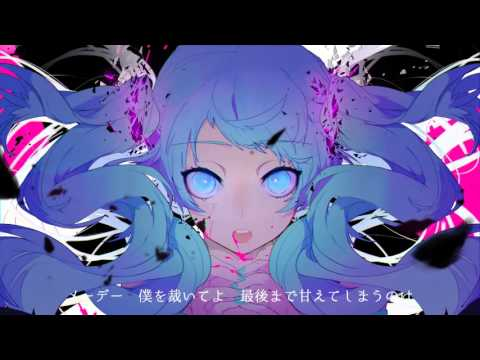
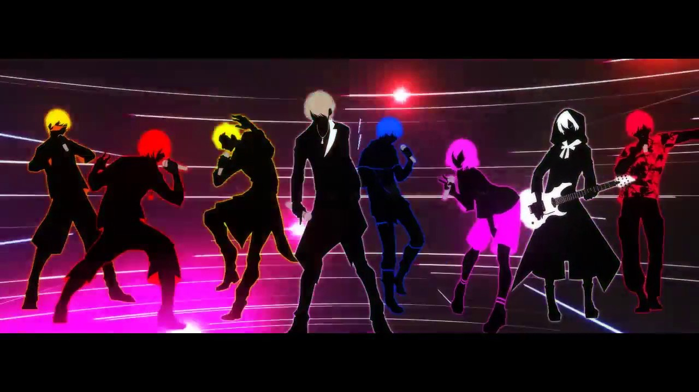
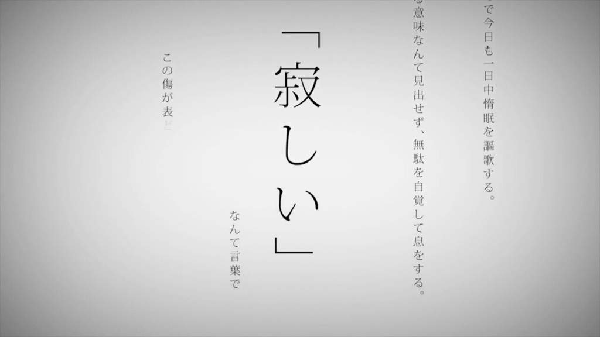

Mafumafu (まふまふ) is an utaite. But what is an utaite? According to the Utaite Wiki, an utaite "is a Japaense term for people who cover previously released songs and post them on Nico Nico Douga and Youtube under the uttattmita category". Mafumafu is well known for his high-ranged voice, many of his originial songs are written with high notes. Mafumafu's recent cover of Android Girl displayed his ability to sing high notes without straining his voice. At the same time, Mafumafu is able to sing with a low raspy voice. Mafu's original song, GHOST featuring Nqrse displays his rapping abilities as well his vocal range. Nqrse is also an utaite, but more known for his rapping. Although he is more known for his rap, Nqrse does enjoy singing.
 
Mafu's currently most watched cover on Nico Nico Douga is Ghost Rule by DECO*27. While the most viewed video on the site is Secret Answer by XYZ, an utaite group. XYZ consists of multiple utaite, including Mafumafu and Nqrse.

The most viewed video on Mafumafu's channel is a cover of the song Hated by Life Itself.